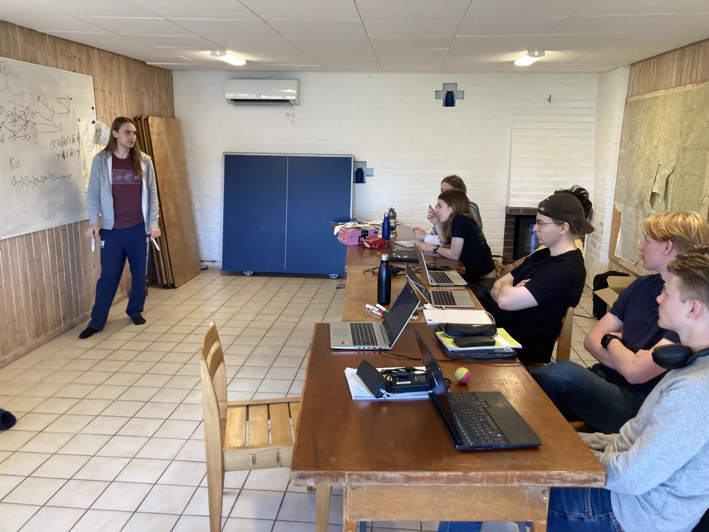
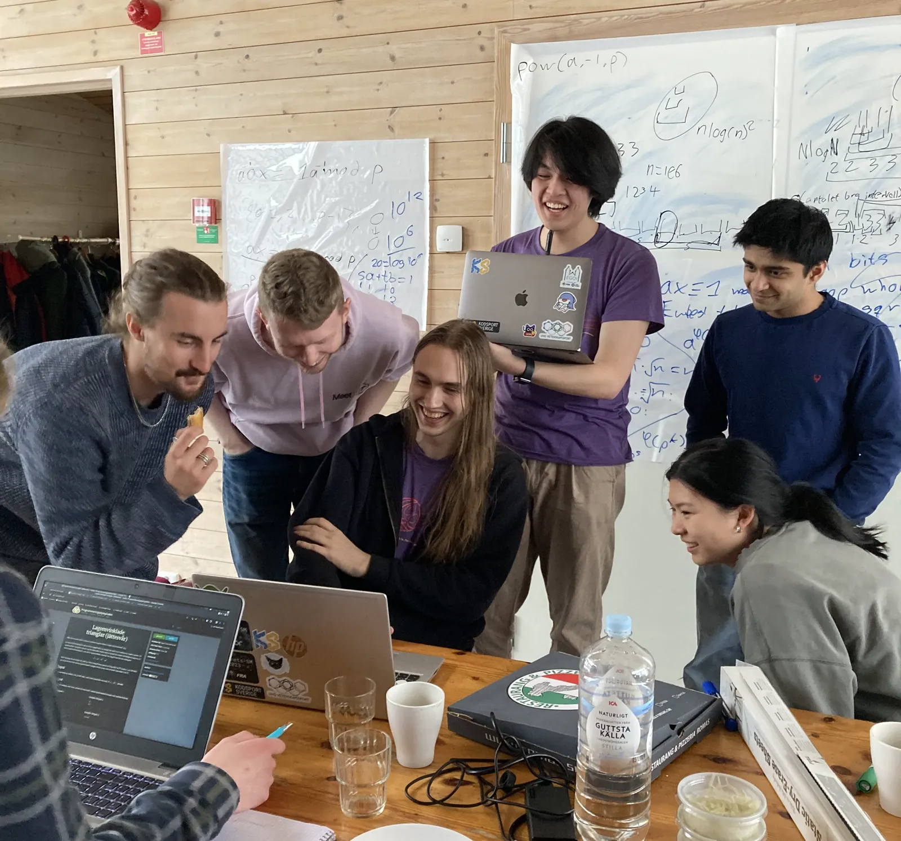
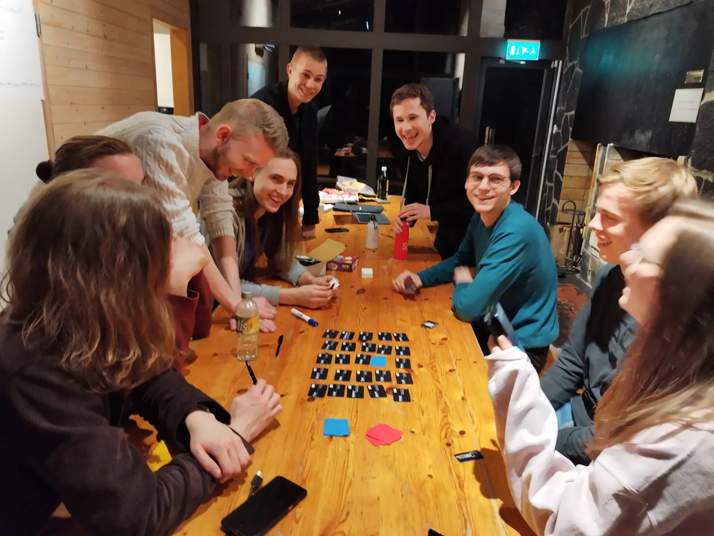

CCC BOOT CAMP
Chalmers Coding Club håller årligen i en boot camp. Under denna
håller vi föreläsningar om algoritmer, spelar brädspel och har det
trevligt. Detta event brukar vara Chalmers Coding Clubs årliga
höjdpunkt, så se till att delta du med!
Alla är inbjudna att delta, oavsett om du pluggar grundskola,
universitet eller jobbar. Håll utkik i vår
Discord,
där vi annonserar när nästa boot camp sker.
BOOT CAMP 2026

I år tog vi paus från traditionen att vara i Härryda och var i
stället i Askim Sjöscoutkårs scoutstuga.
Som vanligt höll vi föreläsningar, badade och spelade brädspel. På
plats skrev vi tävlingen KTH Challenge, där topp 2 var på plats och
tredjeplatsen var en chalmerist på distans 💪
Resultatlista
BOOT CAMP 2025

Vår största boot camp hittills med både sportstugan och CS-bastun!
Vi hade föreläsningar om bland annat binärsökning, dynamisk
programmering, flow och talteori, varvat med roliga aktiviteter som
estimathon,
Go-morgon och bastubad. Tack till våra sponsorer Huawei och Jane
Street som möjliggjorde lägret!
BOOT CAMP 2024

2–4 april 2024 i
Recreation Härryda
🥳
BOOT CAMP 2023

Boot Camp 2023 var 10–12 april i studentkårens
Recreation Härryda. Tack till TogetherTech som sponsrade och bidrog med några roliga
uppgifter!